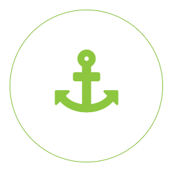

Как стать волонтером?
Прежде всего, необходимо узнать кто такой «волонтер». Это тот кто действует по свободной воле. Сам захотел, и сам выбрал что делать. Ресурс волонтера — его личное время, его личные силы, умения и навыки

Выбор организации
Есть формальные признаки: уставные документы, сайт, команда, описание что и где делают, карта и календарь событий (ложится ли он на Ваш рабочий график), внутренние правила, наличие обучения и поддержки, командная работа

Волонтер помогает только трудом!
Помните! Волонтерство — это вазимный договор. Вазимное решение и признание прав и обязанностей

Готовься сам задавать вопросы!
Что Вам важно знать? Что вы не нашли на сайте? Что вас смутило? Не забудьте спросить кто и с какими полномочиями над Вами старший? Узнайте что делать в случае возникших проблем